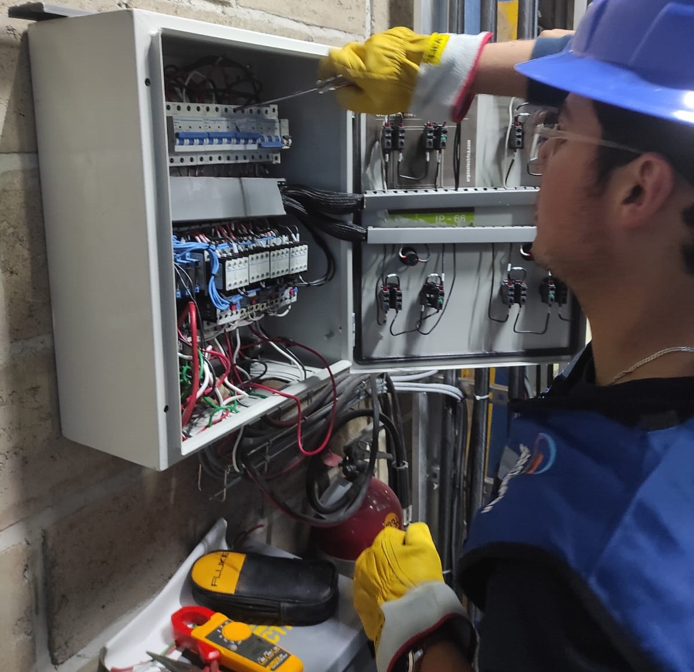
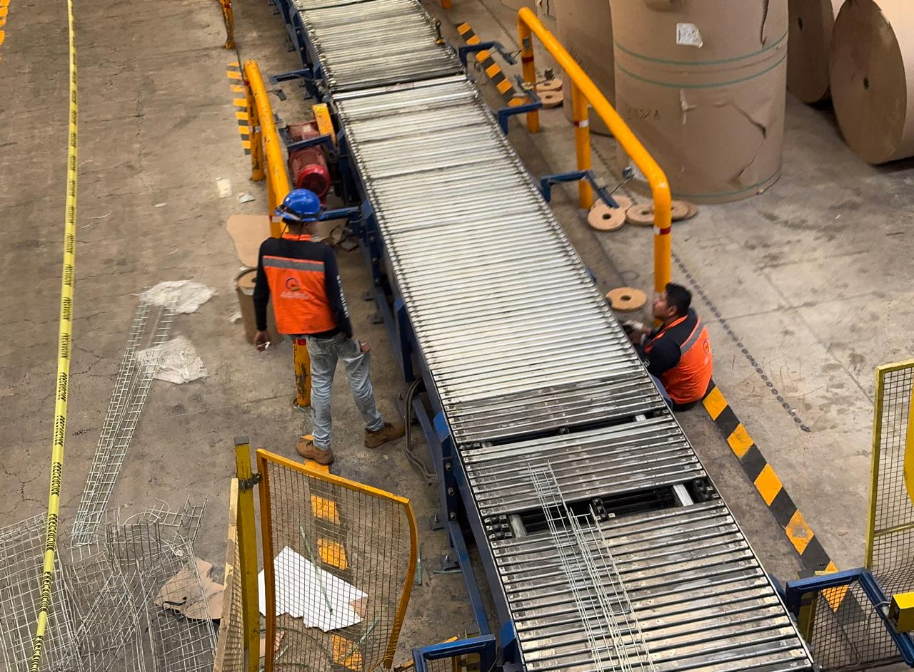

Industrial
Naves, plantas, tableros de fuerza, control de motores y sistemas de energía para procesos continuos.


Modernización de tablero principal, canalizaciones y sistema de iluminación eficiente para naves industriales.
Adaptamos nuestras soluciones eléctricas a distintos sectores, cuidando la seguridad, la eficiencia y la continuidad de tus operaciones.
Naves, plantas, tableros de fuerza, control de motores y sistemas de energía para procesos continuos.
Comercios, oficinas, clínicas, talleres y todo tipo de espacios de atención al cliente.
Hoteles, restaurantes y centros recreativos con iluminación funcional y ambiental.
Escuelas, universidades y centros de capacitación con espacios seguros y bien iluminados.
Edificios públicos, alumbrado, oficinas administrativas y proyectos de infraestructura.
Realizamos trabajos especializados en sistemas de media tensión, cumpliendo estrictamente con las normas de seguridad eléctrica y la reglamentación vigente. Nuestros servicios están orientados a garantizar la operación segura, eficiente y confiable de instalaciones eléctricas industriales, comerciales y de infraestructura
Maniobras en media tensión ejecutadas con herramienta aislada y máxima precisión en campo.
Contamos con personal capacitado, equipo certificado y estrictos protocolos de seguridad.
Intervención eléctrica realizada en coordinación, con personal capacitado y estrictos protocolos de seguridad.
Antes y despues del proyecto

Nuestro equipo arreglando la banda transportadoras desde cero.
Pruebas y funcionamiento correcto tras la instalación y ajustes.
Secuencia del procedimiento: preparación, limpieza y acabado final.

Aislamiento del motor y protección de componentes críticos antes de iniciar el proceso. Se eliminan residuos sólidos, lodos y suciedad acumulada en entornos industriales severos.

Aplicación controlada de agua a presión y agentes de limpieza especializados para remover grasa, polvo, aceites y contaminantes sin dañar el bobinado ni las partes mecánicas.

Secado, inspección visual y revisión final del estado del motor para asegurar condiciones óptimas de operación y confiabilidad antes de su puesta en servicio.

Cableado estructurado
Instalación y mantenimiento de cableado para mantener tus comunicaciones ordenadas, confiables y listas para crecer.